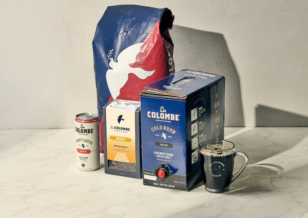
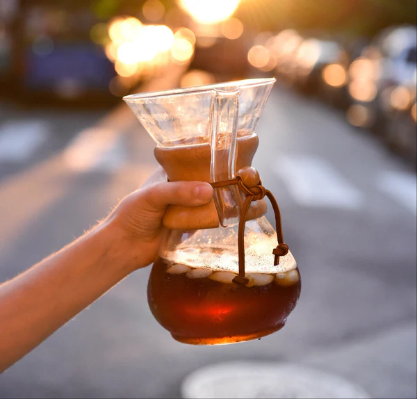

Som-Coffee – The Place of Relaxation and Flavor

Get our best deals on coffee and more when you create a new subscription. Extra discounts for prepaid subscriptions!

For a limited time, upgrade your at-home cafe with 30% OFF our collection of select brewing equipment, drinkware, and more.

earn how to make a delicious S'mores Latte at home.Get the campfire feeling without going outside. This rich and cozy homemade s'mores latte combines chocolate, espresso, and marshmallows for a toasted treat..
SOM*Coffee: Where Craft Meets Comfort in Every Cup.
At SOM*Coffee, we invite you to discover the universe of perfect coffee — where every cup is a journey, every flavor tells a story, and every visit feels like coming home. We are more than a coffee shop; we are a haven for coffee enthusiasts, creatives, and anyone seeking a moment of comfort, connection, and craft.
Our story begins with a deep respect for nature and a relentless pursuit of quality. We source only the finest beans from sustainable farms around the world, carefully selecting each origin to bring out the most unique and exquisite flavor profiles. From earthy and bold to light and floral, our blends are thoughtfully crafted to suit every taste and mood.